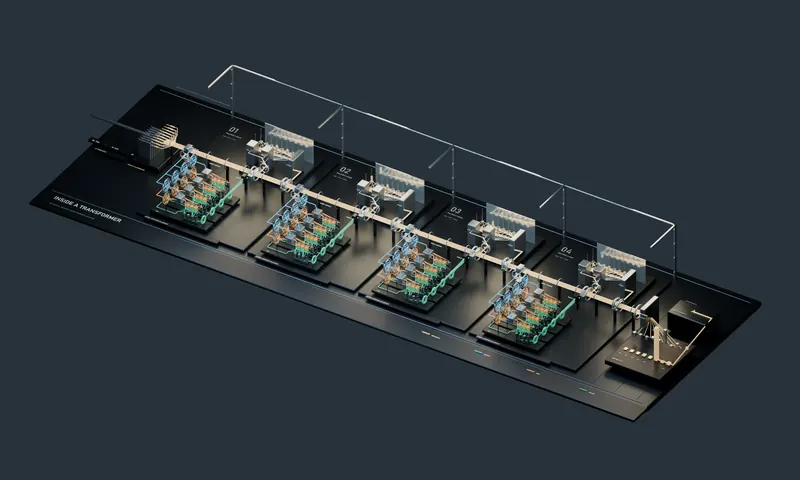
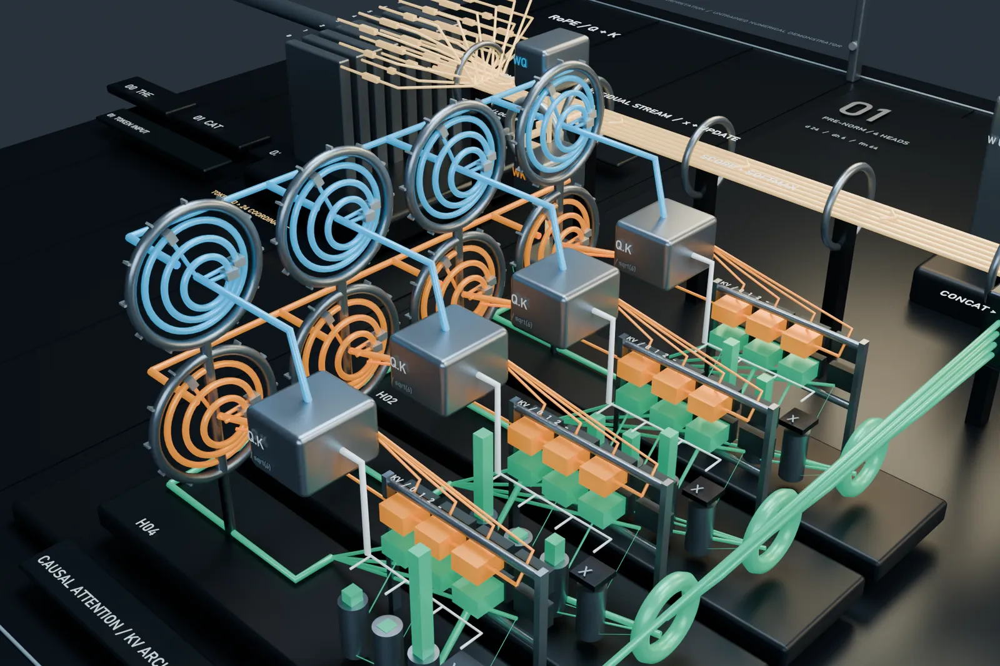
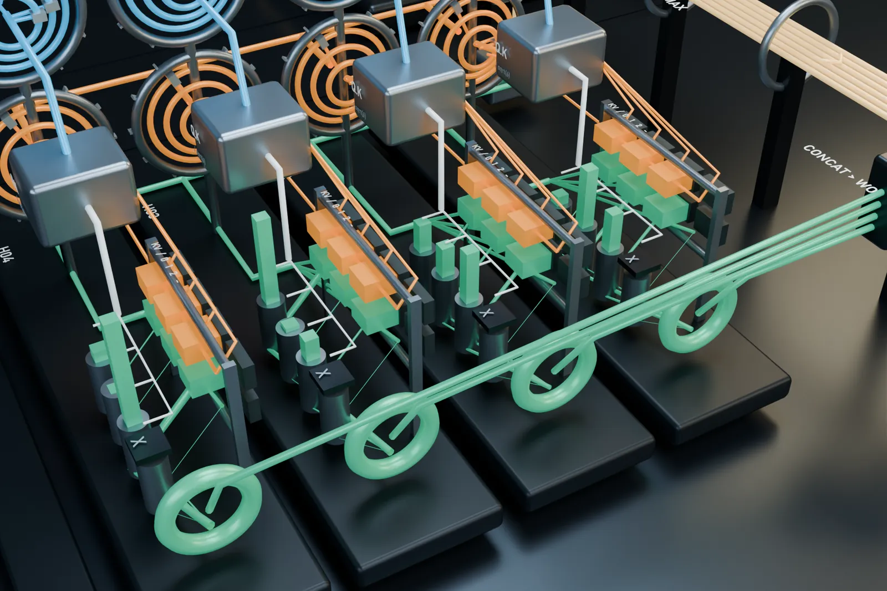
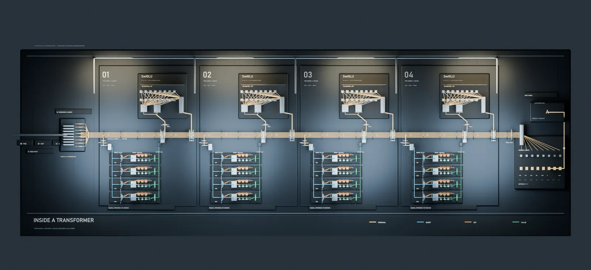

3D Transformer: egy token útja
Egy kis, négyrétegű transzformer háromdimenziós modellje. A kamera egyetlen tokent követ az embeddingtől az attentionön és az MLP-n át a következő token kiválasztásáig.
28 mp-es videó és 4 ábra · kb. 15 perc · kezdő. Legjobb az LLM-tananyag 4–5. szintje után, összefoglalóként.
A videó megtekintése →
A videó
Magyar feliratos, hang nélküli, 28 másodperces videó. A lépésekre kattintva a videó az adott részhez ugrik.
Fontos: ez nem egy betanított modell. A súlyok egy rögzített véletlenmagból (42) származnak, és nincsenek betanítva. Minden látható érték valódi számítás eredménye és reprodukálható, de a kiválasztott „A” token és a 90,65% nem nyelvi jóslat: egy betanítatlan szemléltető modell kimenete. A THE, CAT, SAT feliratok egyszerű tokenazonosítók, nem egy valódi tokenizáló eredményei.
Négy ábra közelről







Pontosan milyen modell ez?
Egy pre-norm, csak dekóderes, kauzális transzformer, teljes többfejű attentionnel. A RoPE pozíciókódolás, az RMSNorm normalizálás és a SwiGLU MLP egy következetes felépítést ad. Ezeket az elemeket sok mai, csak dekóderből álló nyílt modell használja, de nem mind, és ez nem egy konkrét modell másolata. [1] [2] [3] [4]
- Rétegek
- 4
- Reprezentáció (d_model)
- 24 koordináta
- Attention-fejek
- rétegenként 4, fejenként 6 dimenzió
- MLP belső mérete
- 64
- Szótár
- 8 token: THE, CAT, SAT, ON, MAT, A, „.”, <eos>
- Bemenet
- THE CAT SAT (a kamera a harmadik tokent követi)
- Súlyok
- rögzített véletlenmag (42), betanítatlan
- Kiválasztás
- mohó (argmax), T = 1
A kimenet: valószínűségek a következő tokenre
A számítást ellenőrzések kísérik: a kauzális maszk mögötti jövőbeli valószínűség pontosan 0; a KV-tárral és anélkül számolt eredmény eltérése 0; a RoPE normamegőrzési és relatívpozíció-hibája 4,4 · 10⁻¹⁶ (gépi pontosság).
Hogyan kapcsolódik a tananyaghoz? A tokenizálásról az LLM-tananyag 2. szintje, az embeddingről a 3., az attentionről és a residual streamről a 4., az MLP-ről, a normalizálásról és a pozíciókódolásról az 5. szint, a KV-tárról és a mintavételről a 9. szint szól.
Források
- [1]
Vaswani, A. és mtsai. (2017). Attention Is All You Need. NeurIPS. arXiv:1706.03762
- [2]
Touvron, H. és mtsai. (2023). LLaMA: Open and Efficient Foundation Language Models. arXiv:2302.13971
- [3]
Su, J. és mtsai. (2021). RoFormer: Enhanced Transformer with Rotary Position Embedding. arXiv:2104.09864
- [4]
Shazeer, N. (2020). GLU Variants Improve Transformer. arXiv:2002.05202
A 3D modell, a videó és az ábrák Blenderben készültek. A számértékek a szemléltető modell numerikus számításából származnak; a futtatókód és a részletes számítási nyomkövetés ezen az oldalon még nem érhető el.
Tanításban vagy a munkahelyeden használod? Örülnék, ha megírnád: csaplar.d@gmail.com